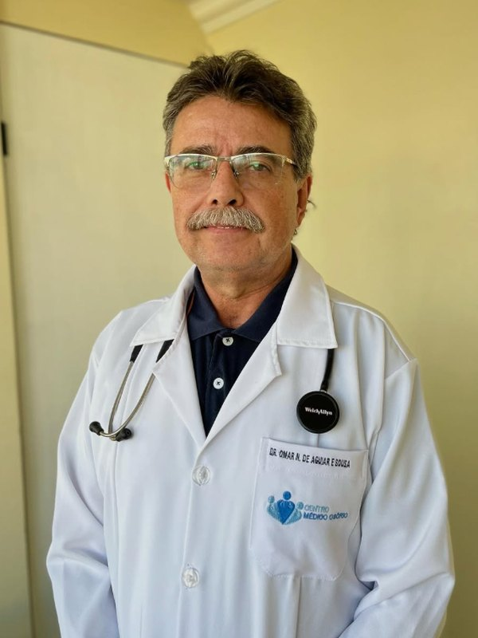
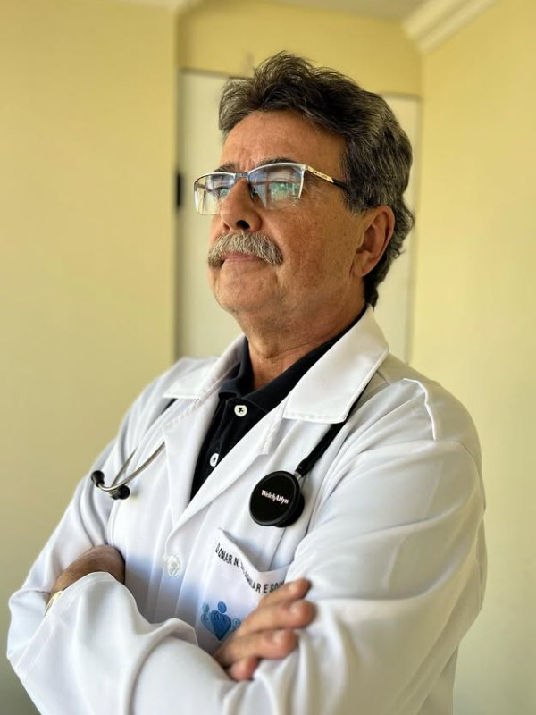

Cuidado do aparelho digestivo e cirurgias sem internamento.
Endoscopia digestiva, cirurgias ambulatoriais e consultas com um cirurgião que explica antes de indicar. Você entende o que tem, por que tem e quais são os caminhos.
Centro, Curitiba — PR, 80020-000
Atendimento por convênio e particular · (41) 3225-2627

Antes de indicar qualquer exame ou cirurgia, existe uma conversa. Você precisa entender o que tem, por que tem e o que acontece se não fizer nada.
É assim há mais de trinta anos, e é o que sustenta tudo o que se faz aqui.

Dr. Omar Neves de Aguiar e Sousa
CRM-PR 12556 · RQE 5109 — Cirurgia Geral
Mais de três décadas dedicadas à cirurgia e ao aparelho digestivo. A forma de atender é a mesma desde o começo: explicar antes de indicar, incluindo a possibilidade de não fazer nada agora, quando essa é a melhor conduta.
- 1990Medicina, Pontifícia Universidade Católica do Paraná
- 1992Residência em Clínica Cirúrgica, Santa Casa de Curitiba
- 1993Especialização em Endoscopia Digestiva
No centro, no Edifício Wawel
Rua Voluntários da Pátria, 400, 11º andar
Edifício Wawel — Centro, Curitiba, PR, 80020-000
A poucos minutos a pé da Praça Osório, em região servida por várias linhas de ônibus. O atendimento é no 11º andar.
Já foi atendido aqui?
Sua avaliação no Google ajuda outras pessoas a encontrar a clínica e a saber o que esperar do atendimento. Leva menos de um minuto e não precisa escrever nada.
Clínica, cirurgia geral e endoscopia
Da queixa que ninguém explicou até o procedimento que resolve. Quando o caso pede outra especialidade, você sai daqui sabendo para onde ir.
Consultas em clínica e cirurgia geral
Azia, dor abdominal, gastrite, má digestão, alteração intestinal, nódulos e lesões de pele, avaliação de laudos, segunda opinião e avaliação pré-operatória.
A consulta pode terminar em tratamento, em exame, em procedimento ou na conclusão de que nada precisa ser feito agora.
Endoscopia digestiva alta
Uma câmera fina examina esôfago, estômago e o início do intestino. É o exame que responde à maior parte das queixas digestivas e permite colher biópsia no mesmo momento.
Dura de cinco a dez minutos e o laudo sai no mesmo dia.
Cirurgia ambulatorial
Lipomas, cistos, lesões de pele, unha encravada, pequenas hérnias e biópsias. Anestesia local, ambiente cirúrgico preparado e alta no mesmo dia.
Você entra e sai no mesmo dia, sem passar noite nenhuma no hospital.
“Cirurgia ambulatorial” quer dizer o quê?
É o nome técnico de uma coisa simples: cirurgia sem internamento. Você chega, faz o procedimento com a região anestesiada, descansa um pouco e volta para casa no mesmo dia.
Não tem noite no hospital, não tem jejum longo, não tem semanas parado. É assim que se resolve aquele caroço nas costas que cresceu, o cisto que já inflamou três vezes, a unha do pé que encrava sempre.
As dúvidas que aparecem todo dia no consultório
Textos curtos, escritos para quem chegou aqui com uma pergunta específica.
Agende sua consulta
O atendimento é por telefone, com horário marcado. Se preferir, ligue e tire a dúvida antes de decidir.
(41) 3225-2627Rua Voluntários da Pátria, 400, 11º andar — Edifício Wawel — Centro, Curitiba, PR